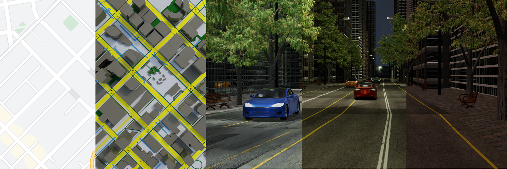
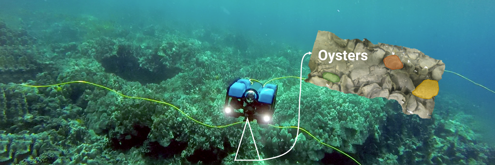

Olive The Above
Modern robotics has enabled the advancement in yield estimation for precision agriculture. However, when applied to the olive industry, the high variation of olive colors and their similarity to the background leaf canopy presents a challenge. Labeling several thousands of very dense olive grove images for segmentation is a labor-intensive task. This paper presents a novel approach to detecting olives without the need to manually label data. In this work, we present the world’s first olive detection dataset comprised of synthetic and real olive tree images. This is accomplished by generating an auto-labeled photorealistic 3D model of an olive tree. Its geometry is then simplified for lightweight rendering purposes. In addition, experiments are conducted with a mix of synthetically generated and real images, yielding an improvement of up to 66% compared to when only using a small sample of real data. When access to real, human-labeled data is limited, a combination of mostly synthetic data and a small amount of real data can enhance olive detection.
References
Detecting Olives with Synthetic or Real Data? Olive the Above
IROS 2023
Yianni Karabatis, Xiaomin Lin, Nitin J. Sanket, Michail G. Lagoudakis, Yiannis Aloimonos, IEEE International Conference on Intelligent Robots and Systems (IROS), 2023.
WorldGen
In the era of deep learning, data is the critical determining factor in the performance of neural network models. Generating large datasets suffers from various difficulties such as scalability, cost efficiency and photorealism. To avoid expensive and strenuous dataset collection and annotations, researchers have inclined towards computer-generated datasets. Although, a lack of photorealism and a limited amount of computer-aided data, has bounded the accuracy of network predictions.
To this end, we present WorldGen - an open source framework to autonomously generate countless structured and unstructured 3D photorealistic scenes such as city view, object collection, and object fragmentation along with its rich ground truth annotation data. WorldGen being a generative model gives the user full access and control to features such as texture, object structure, motion, camera and lens properties for better generalizability by diminishing the data bias in the network. We demonstrate the effectiveness of WorldGen by presenting an evaluation on deep optical flow. We hope such a tool can open doors for future research in a myriad of domains related to robotics and computer vision by reducing manual labor and the cost of acquiring rich and high-quality data.
References
ICRA 2023
Chahat Deep Singh, Riya Kumari, Cornelia Fermuller, Nitin J. Sanket, Yiannis Aloimonos, IEEE International Conference on Robotics and Automation (ICRA), 2023.

OysterNet
Oysters play a pivotal role in the bay living ecosystem and are considered the living filters for the ocean. In recent years, oyster reefs have undergone major devastation caused by commercial over-harvesting, requiring preservation to maintain ecological balance. The foundation of this preservation is to estimate the oyster density which requires accurate oyster detection. However, systems for accurate oyster detection require large datasets obtaining which is an expensive and labor-intensive task in underwater environments.
To this end, we present a novel method to mathematically model oysters and render images of oysters in simulation to boost the detection performance with minimal real data. Utilizing our synthetic data along with real data for oyster detection, we obtain up to 35.1% boost in performance as compared to using only real data with our OysterNet network. We also improve the state-of-the-art by 12.7%. This shows that using underlying geometrical properties of objects can help to enhance recognition task accuracy on limited datasets successfully and we hope more researchers adopt such a strategy for hard-to-obtain datasets.
References
ICRA 2023
Xiaomin Lin, Nitin J. Sanket, Nare Karapetyan, Cornelia Fermuller, Yiannis Aloimonos, IEEE International Conference on Robotics and Automation (ICRA), 2023.

EVPropNet
The rapid rise of accessibility of unmanned aerial vehicles or drones pose a threat to general security and confidentiality. Most of the commercially available or custom-built drones are multi-rotors and are comprised of multiple propellers. Since these propellers rotate at a high-speed, they are generally the fastest moving parts of an image and cannot be directly "seen" by a classical camera without severe motion blur. We utilize a class of sensors that are particularly suitable for such scenarios called event cameras, which have a high temporal resolution, low-latency, and high dynamic range.
In this paper, we model the geometry of a propeller and use it to generate simulated events which are used to train a deep neural network called EVPropNet to detect propellers from the data of an event camera. EVPropNet directly transfers to the real world without any fine-tuning or retraining. We present two applications of our network: (a) tracking and following an unmarked drone and (b) landing on a near-hover drone. We successfully evaluate and demonstrate the proposed approach in many real-world experiments with different propeller shapes and sizes. Our network can detect propellers at a rate of 85.1% even when 60% of the propeller is occluded and can run at upto 35Hz on a 2W power budget. To our knowledge, this is the first deep learning-based solution for detecting propellers (to detect drones). Finally, our applications also show an impressive success rate of 92% and 90% for the tracking and landing tasks respectively.
References
RSS 2021
Nitin J. Sanket, Chahat Deep Singh, Chethan M. Parameshwara, Cornelia Fermuller, Guido C.H.E. de Croon, Yiannis Aloimonos, Robotics Science and Systems (RSS), 2021.
PRGFlow
Odometry on aerial robots has to be of low latency and high robustness whilst also respecting the Size, Weight, Area and Power (SWAP) constraints as demanded by the size of the robot. A combination of visual sensors coupled with Inertial Measurement Units (IMUs) has proven to be the best combination to obtain robust and low latency odometry on resource-constrained aerial robots. Recently, deep learning approaches for Visual Inertial fusion have gained momentum due to their high accuracy and robustness. However, the remarkable advantages of these techniques are their inherent scalability (adaptation to different sized aerial robots) and unification (same method works on different sized aerial robots) by utilizing compression methods and hardware acceleration, which have been lacking from previous approaches. To this end, we present a deep learning approach for visual translation estimation and loosely fuse it with an Inertial sensor for full 6 DoF odometry estimation. We also present a detailed benchmark comparing different architectures, loss functions and compression methods to enable scalability. We evaluate our network on the MSCOCO dataset and evaluate the VI fusion on multiple real-flight trajectories.
References
Electronic Letters 2021
Nitin J. Sanket, Chahat Deep Singh, Cornelia Fermuller, Yiannis Aloimonos, Electronics Letters, 2021.
EVDodgeNet
Dynamic obstacle avoidance on quadrotors requires low latency. A class of sensors that are particularly suitable for such scenarios are event cameras. In this paper, we present a deep learning based solution for dodging multiple dynamic obstacles on a quadrotor with a single event camera and onboard computation. Our approach uses a series of shallow neural networks for estimating both the ego-motion and the motion of independently moving objects. The networks are trained in simulation and directly transfer to the real world without any fine-tuning or retraining. We successfully evaluate and demonstrate the proposed approach in many real-world experiments with obstacles of different shapes and sizes, achieving an overall success rate of 70% including objects of unknown shape and a low light testing scenario. To our knowledge, this is the first deep learning based solution to the problem of dynamic obstacle avoidance using event cameras on a quadrotor. Finally, we also extend our work to the pursuit task by merely reversing the control policy, proving that our navigation stack can cater to different scenarios.
References
ICRA 2020
Nitin J. Sanket*, Chethan M. Parameshwara*, Chahat Deep Singh, Ashwin V. Kuruttukulam, Cornelia Fermuller, Davide Scaramuzza, Yiannis Aloimonos, IEEE International Confernce on Robotics and Automation, Paris, 2020.
* Equal Contribution


 Perception and Autonomous Robotics Group
Perception and Autonomous Robotics Group